Botos Csaba


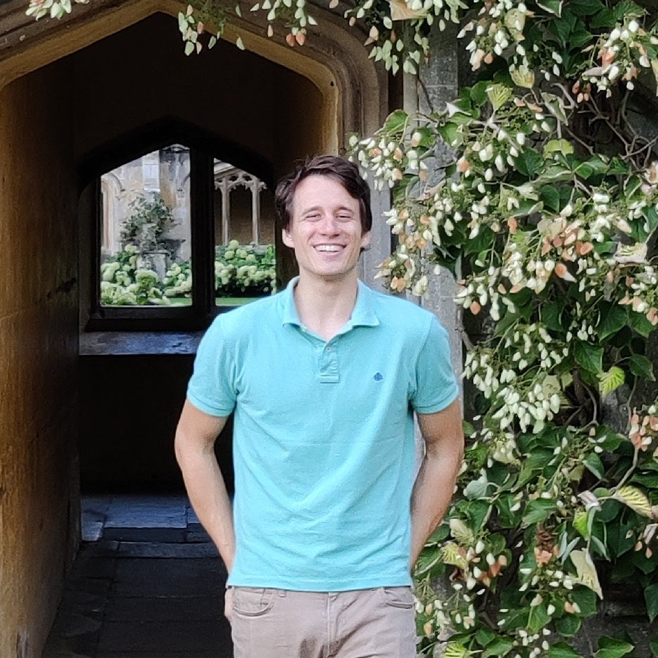
About me
The thread tying my work together is teaching, which I think is the overlooked problem in theory of mind: you cannot teach a mind without first modelling how it thinks. So I study how frontier reasoning models form, test, and revise hypotheses, and how their internal representations line up with human cognition, using controlled behavioural and neural experiments. I then ask how that understanding lets machines teach humans, by tracking what a learner knows and choosing the tasks that move them forward, and lets artificial agents teach and coordinate with one another.
[DEMO] I am passionate about communicating ML research to a wide audience and I have made TensorFlow.js visualizations: Domain Partitioning via Adversarial Training, Real-Time Online Continual Learning, Interactive Contrastive Learning.
I have been awarded the Encode Fellowship funded by the UK Government and managed by Pillar VC to work on Adaptive Curricula for Human Learning with Christopher Summerfield and Rui Ponte Costa. In addition, I hold a Junior Research Fellowship at Wolfson College, University of Oxford.
Previously, I defended my DPhil thesis in Engineering Science at University of Oxford, supervised by Prof. Philip Torr and Dr. Adel Bibi and examined by Prof. Ferenc Huszár and Dr. Oiwi Parker Jones. My thesis focuses on compute efficient distribution drift detection and test time adaptation across vision and language tasks.
During my undergraduate studies, I interned at the Institute of Experimental Medicine under the supervision of Dr. Gábor Nyiri, at Verizon Smart Communities under the supervision of Dr. András Horváth. During my DPhil, I was a research intern at the Intel Embodied AI Lab.
Selected Publications
- Reason to Play: Behavioral and Brain Alignment Between Frontier LRMs and Human Game Learners. Botos Csaba*, Sreejan Kumar, Austin T. D. Andrews, Laurence Hunt, Chris Summerfield, Joshua B. Tenenbaum, Rui Ponte Costa, Marcelo G. Mattar, Momchil Tomov. arXiv preprint, 2026. (*equal contribution) [arXiv] [project]
- Label Delay in Continual Learning. Botos Csaba, Wenxuan Zhang, Matthias Müller, Ser-Nam Lim, Mohamed Elhoseiny, Philip Torr, Adel Bibi. NeurIPS, 2024. [demo]
- Diversified Dynamic Routing for Vision Tasks. Botos Csaba, Adel Bibi, Yanwei Li, Philip Torr, Ser-Nam Lim. ECCV, 2022. [scholar]
- Multilevel Knowledge Transfer for Cross-Domain Object Detection. Botos Csaba, Xiaojuan Qi, Arslan Chaudhry, Puneet Dokania, Philip Torr. arXiv preprint, 2021. [arXiv]
- Domain Partitioning Network. Botos Csaba, Adnane Boukhayma, Viveka Kulharia, András Horváth, Philip H. S. Torr. arXiv preprint, 2019. [arXiv]
- PPCU Sam: Open-Source Face Recognition Framework. Botos Csaba, Hakkel Tamás, András Horváth, András Oláh, István Z. Reguly. Procedia Computer Science, 2019. [scholar]
- Strong Deep Learning Baseline for Single Lead ECG Processing. Botos Csaba, Tamás Hakkel, Márton Áron Goda, István Reguly, András Horváth. Computer Science Research Conference, 2017. [scholar]
Teaching
I have been hosting and organizing Machine Learning Seminars and Reading Groups:
- Wolfson AI Discussions (University of Oxford)
- XML: Cross-Disciplinary Machine Learning Research Cluster (University of Oxford)
- GirlsWhoML: Outreach program for underrepresented groups in machine learning (University of Oxford)
- AI Retreat 2023 (Nagymaros, Hungary)🎉
- LAMA AI Workshop Series 2023 (Budapest, Hungary)
- Scientific Wonders 2018-2020 (Budapest, Hungary)
- Deep Reinforcement Learning (BSc, Pázmány Péter Catholic University)
- Applications of Machine Learning (BSc, Pázmány Péter Catholic University)
- Information Theory (BSc, Pázmány Péter Catholic University)
- Introduction to Programming (BSc, Pázmány Péter Catholic University)
Projects
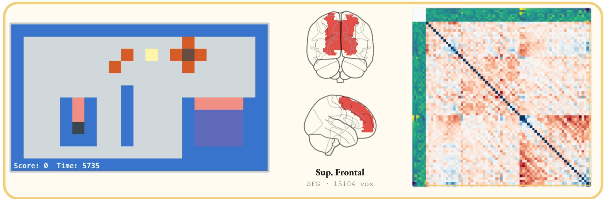
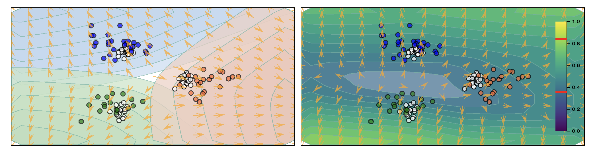
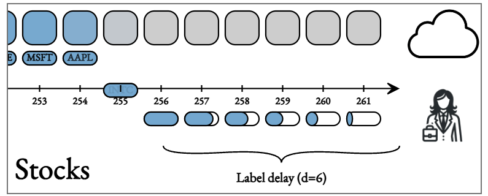
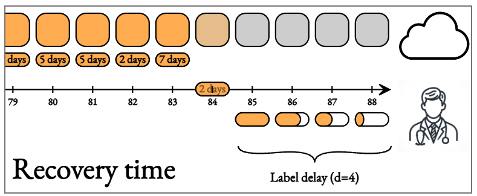
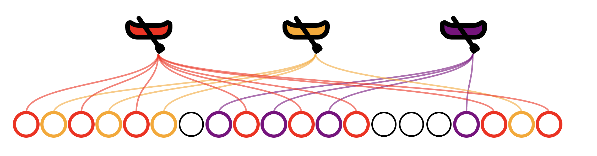
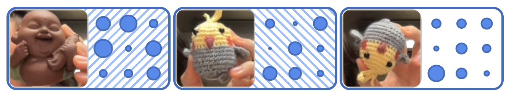
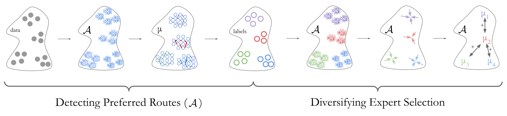
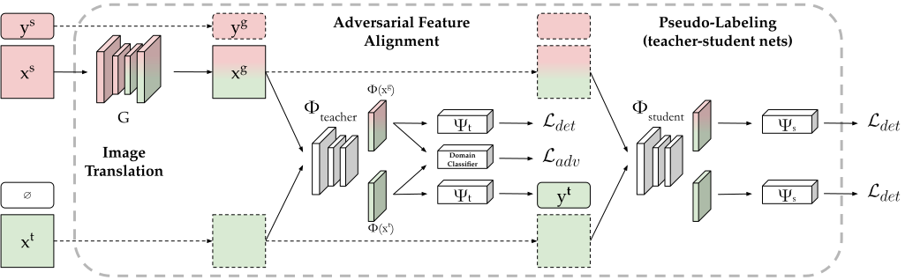
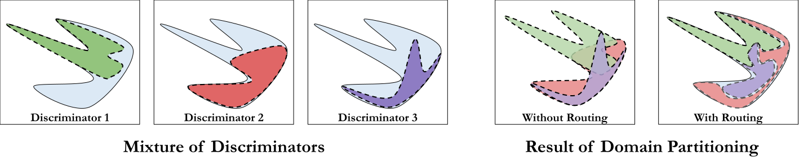
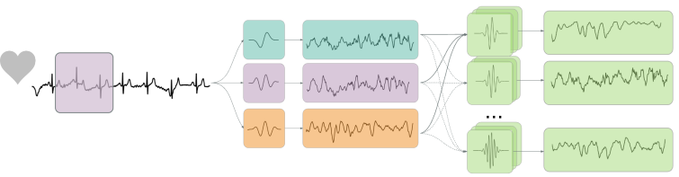
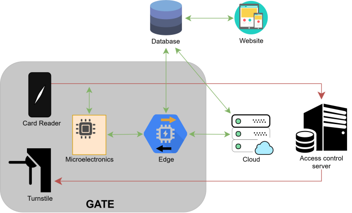